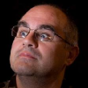

Què és Edutec
El projecte Edutec és una iniciativa de caire essencialment docent. Es caracteritza per la seva premissa de partida: l'aprenentatge de la programació d'ordinadors és el que fa possible que el ciutadà passi de ser consumidor passiu de tecnologia a ser participant actiu del món tecnològic. A més, les conseqüències derivades d'aquest aprenentatge tenen com a resultat canvis en la metodologia de resolució de problemes (generals, no només informàtics) molt adequats al nostre entorn social actual.
Objectius
L'objectiu principal d'Edutec és la divulgació i difusió de la programació d'ordinadors. Aquest projecte utilitza com a eix vertebrador el llenguatge Smalltalk, en les seves versions lliures, i el maquinari Arduino. L'ensenyament de la programació s'estructura segons l'edat dels estudiants. Per a nens hem usat Scratch, desenvolupant una versió pròpia que permet connectar plaques Arduino (S4A).
Context
El context general on es desenvolupa el projecte és el d'una societat cada vegada més depenent de les noves tecnologies amb una població que està, metafòricament, perdent el tren. La tecnologia arriba al ciutadà com una eina màgica, i no com una eina que entén, domina i utilitza per expressar-se. En aquest sentit, el context particular del projecte, el Citilab, és el lloc ideal on desenvolupar-ho, donada la coherència d'objectius entre la filosofia del centre i el projecte Edutec.
Innovació
Essencialment hem desenvolupat S4A (Scratch for Arduino), i diverses metodologies experimentals d'ensenyament de la programació (sobretot lligada a Arduino i la S4A; tallers d'estiu, Festa de la ciència, etc).
Jose García
En Jose va estudiar Enginyeria Superior en Telecomunicacions, però va començar a treballar a una editorial abans d'acabar els estudis. Durant el temps que va treballar en aquesta empresa, va programar una àmplia varietat d'aplicacions.
Al Citilab, va descobrir Scratch i Smalltalk, reemprenent part de la seva feina com a programador. Més endavant, es va unir a diversos projectes amb l'objectiu d'establir una relació més propera entre els usuaris i la programació. Acualment, és el cap de l'equip de recerca en educació tecnològica Edutec.
Joan Güell
En Joan és un biòleg que, en els seus primers anys, va treballar en el camp de l'ecologia. La necessitat d'analitzar l'informació generada i les dades recollides va instigar el seu apropament a l'informàtica. Es va inscriure al seu primer curs de programació l'any 1975, quan els ordinadors encara es programaven amb targetes perforades.
La seva tasca principal al Citilab ha estat relacionada amb el camp de la formació en dues àrees: l'ensenyament de la programació mitjançant Scratch, especialment per a nens, i la formació en coneixements d'informàtica a ciutadans adults.
Víctor Casado
En Víctor va començar a estudiar Enginyeria en Informàtica a la Universitat Autònoma de Barcelona (UAB), però després de dos anys va passar a estudiar el grau de telecomunicacions a l'Escola Politècnica Superior de Castelldefels.
Durant aquest temps, va sorgir-li l'oportunitat d'entrar al Citilab a través d'una beca, on va desenvolupar S4A, el seu projecte final.
Bernat Romagosa
L'any 2009, en Bernat es va graduar com a Enginyer Tècnic en Informàtica de Gestió per la Universitat Oberta de Catalunya (UOC). Va aprendre Smalltalk en un curs impartit per Jordi Delgado al Citilab durant l'any 2008, on més endavant va entrar a treballar amb l'objectiu de desenvolupar una escola virtual de programació.
Des d'aleshores, ha estat involucrat en diversos projectes de programació al Citilab. Entre d'altres, un sistema de gestió del coneixement i diverses aplicacions educatives.
Jordi Delgado

En Jordi és professor adjunt al departament de software de la Universitat Politècnica de Catalunya (UPC). Pertany al grup de recerca LARCA i imparteix classes a la Facultat d'Informàtica de Barcelona.
Inverteix la major part del seu temps en divulgar, difondre la idea i programar en Smalltalk, un llenguatge de programació apassionant que considera que tothom hauria d'utilitzar. És membre de la mesa de la European Smalltalk Users Group (ESUG) i president de l'associació Smalltalk.cat.